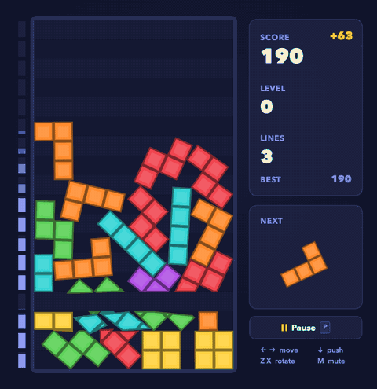

Select everything below the line, copy, and paste into the itch.io description editor.
Then upload screenshots/gameplay.gif with the editor's image button where the GIF goes.

Pieces don't snap to a grid here. Every block is a real rigid body: you push it and spin it with forces, and it tumbles, wedges and topples onto the pile. Once a row holds enough area it is sliced straight out, cutting right through whatever pieces are in the way, and the leftover fragments drop into the gap.
How to play
- Steer the falling piece with forces: nudge it sideways, push it down, spin it. It keeps its momentum.
- The gauge beside the well shows how full each row is. Fill one to 8.1 blocks' worth of area and it's cut out.
- Tighter rows score more, and clearing several at once scores much more.
- Every 10 rows the pieces fall faster. The game ends when the stack reaches the top.
Modes
- Cut: endless single player. Enter a name at the end to post your score to the online leaderboard, with a weekly and an all-time board.
- Versus: two players on one keyboard, or two gamepads. Same pieces for both, mirrored for player 1. When both have topped out, the higher score wins.
Controls
- Move: ← → or A D
- Push down: ↓ or S
- Rotate: Z and X
- Pause: P or Esc · Mute: M · Fullscreen: F
- Versus: player 1 uses A D, S and Q E; player 2 uses J L, K and U O (or ← → ↓ and , .)
- Gamepads work (d-pad or stick, A/B to rotate, Start to pause), and phones and tablets get on-screen buttons.
Also
- A Retro look in Options → Graphics: four greys, pixel-art blocks and brick walls.
- Two original music tracks; all sound is synthesised as you play.
- Settings and your personal top 5 are saved in your browser.
Credits
The gameplay is ported from Not Tetris 2 by Maurice Guégan (MIT license): its rules and tuning are carried over from the original source. Everything you see and hear is new: the graphics are drawn in code and the music and sound are synthesised at runtime. Physics by planck.js.
Not Tetris 2 is itself a physics take on Tetris, which Alexey Pajitnov created in 1984. Tetris is a trademark of The Tetris Company; Slicefall is not affiliated with or endorsed by it.